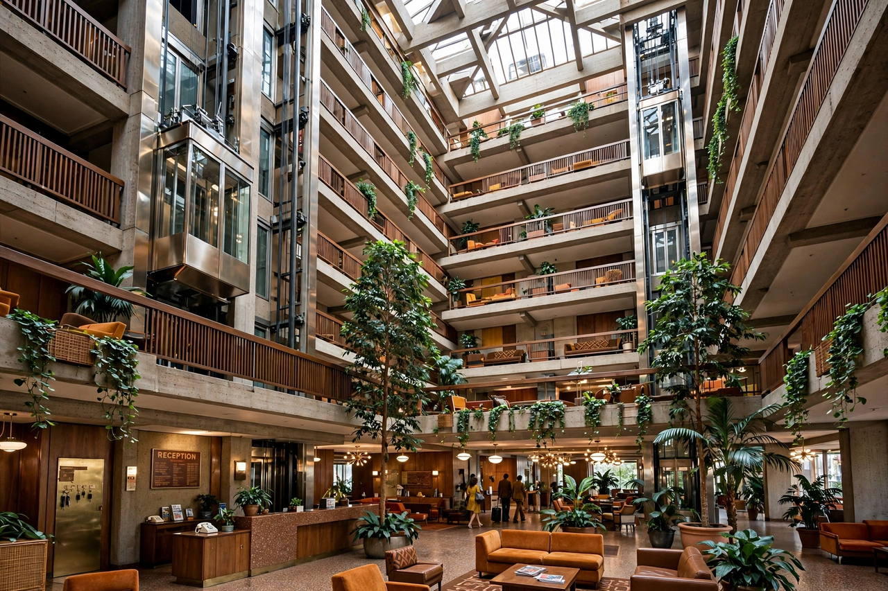

Hyatt
Hyatt Hotels Corporation, commonly known as Hyatt Hotels & Resorts, is an American multinational hospitality company headquartered in Chicago, Illinois. It manages and franchises luxury and business hotels, resorts, and vacation properties worldwide. The company was founded in 1957 by Jay Pritzker and his brother Donald, and members of the Pritzker family remain among its leading figures.

| Industry | Hospitality |
|---|---|
| Founded | September 27, 1957 |
| Founders | Jay Pritzker, Donald Pritzker |
| Headquarters | Chicago, Illinois, U.S. |
| Brands | Park Hyatt, Andaz, Grand Hyatt, Hyatt Regency, Hyatt Place, Hyatt House, Miraval, Alila |
| Website | hyatt.com |
History
The Hyatt story began in 1954, when entrepreneurs Hyatt Robert von Dehn and Jack Dyer Crouch opened the Hyatt House, a motel near Los Angeles International Airport. In 1957 Jay Pritzker bought Von Dehn's interest for roughly $2.2 million and, with his brother Donald, expanded the chain along the West Coast, betting that air travel would transform American business travel.
The company's breakthrough came in 1967 with the Hyatt Regency Atlanta, architect John Portman's revolutionary open-atrium design, in which balconies overlook a vast central lobby. The Regency brand became Hyatt's flagship. The company went international in 1969 with the Hyatt Regency Hong Kong and grew through the luxury Park Hyatt brand (launched 1980), resorts, and later select-service brands Hyatt Place and Hyatt House.
Operations
Hyatt operates more than a thousand properties in dozens of countries under a portfolio of brands spanning luxury (Park Hyatt, Miraval, Alila), lifestyle (Andaz, Thompson Hotels), and all-inclusive resorts. In 2009 Hyatt Hotels Corporation listed on the New York Stock Exchange under the ticker "H". The company's loyalty program is World of Hyatt, and the Pritzker family's Hyatt Foundation sponsors the Pritzker Architecture Prize, founded by Jay Pritzker in 1979.
See also
References
- Hyatt Hotels Corporation, annual reports and company history.
- "The Pritzker Family: A History of Hospitality", Forbes.